Gasto cardíaco y contractilidad del ventrículo izquierdo
Guía de referencia basada en el flujo de trabajo del documento clínico Gasto cardiaco.docx
(ecocardiografía transtorácica): de las mediciones en equipo a las fórmulas y a los índices de
contractilidad. Los umbrales son orientativos; confirmar con guías ASE/ESC y protocolo del laboratorio.
Flujo lógico: de la medición al resultado
Seguir el orden ayuda a auditar el cálculo y a localizar errores (ángulo Doppler, trazado VTI, diámetro LVOT, FC).
Geometría y flujo de salida del VI: diámetro LVOT (o área equivalente) + VTI en el mismo tracto → volumen sistólico (VS).
Frecuencia cardíaca (FC) en el momento del registro (idealmente promedio del mismo ciclo).
Gasto cardíaco (GC):GC = VS × FC (ajustar unidades a L/min; ver §1).
Índice cardíaco (IC): normalizar por superficie corporal → IC = GC / ASC.
Contractilidad / función VI (en paralelo): modo M (Teichholz), biplanos (Simpson), EPSS, estimación visual, dP/dT, volúmenes, índice de Tei — cada método aporta una pieza; no son intercambiables en todos los contextos.
Documentación en consola: conservar capturas de VTI, calibración del diámetro LVOT y planos usados para Simpson facilita la trazabilidad clínica.
1. Medición de VTI y área del tracto de salida aórtico (LVOT)
1.1. VTI, área LVOT y GC — cuatro pasos en consola
VTIIVT / VTILVOT
Área LVOT: medir el diámetro en el mismo tracto anatómico que el PW (p. ej. PEL + zoom, sístole) y derivar el área según protocolo.
Vista apical 5 cámaras (A5C) alineada al LVOT; Doppler pulsado (PW) con muestra justo proximal a la válvula aórtica.
Trazar el contorno del espectro sistólico limpio; el equipo integra el VTI (unidad habitual: cm). En volumen sistólico “fisiológico” muchos laboratorios citan VTI > 17–18 cm como orden de magnitud en adultos (depende de FC y gasto basal).
Paso 1
Área del LVOT (círculo en sístole) — diámetro a área
AT (área trasversal VAo)
Diámetro→Área (método Teichholz) (cm²)
PEL > Modo M + zoom(X cm)→X cm²(sístole)
PEL: paraesternal eje largo; en esa vista se pasa a modo M con zoom para medir el diámetro interno en sístole.
Área A partir del diámetro (D) en el mismo plano que el PW del LVOT (sístole):
ÁreaLVOT = π × (D/2)² (D en cm → Área en cm²)
Mediciones habituales: PEL (paraesternal eje largo) + zoom y calibración en borde interno–interno, o modo M en el mismo eje para el diámetro en sístole (según protocolo).
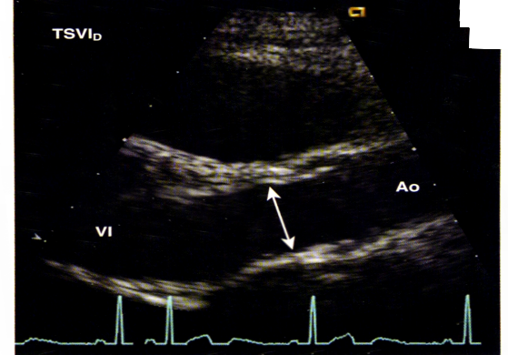
TSVI_D (eje largo)
El diámetro del LVOT debe medirse en el mismo tracto anatómico que el muestreo del PW
(habitualmente eje largo parasternal o equivalente con buena resolución axial), en
meso-sístole y con calibración interno–interno según guía del laboratorio. Un error de
milímetros en el diámetro se propaga al cuadrado en el área y altera el GC de forma notable.
Si el plano no es coaxial al LVOT, el diámetro se sobrestima o subestima; repita la medición tras optimizar
el plano y el zoom.
Paso 2
Colocación del volumen de muestra (A5C → LVOT)
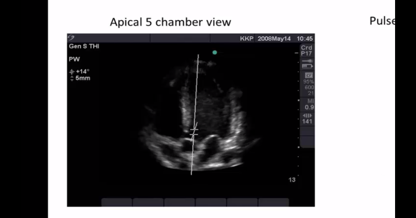
Apical 5C + PW en LVOT
En la vista apical de cinco cámaras, alinee el eje Doppler con el flujo del tracto de salida del VI y
sitúe la muestra justo proximal a la válvula aórtica (habitualmente 0,5–1 cm), evitando
que la muestra quede en la valva o en la raíz donde el espectro se distorsiona. Ajuste el
ángulo de corrección al vector de flujo y use un tamaño de muestra acorde al protocolo
(p. ej. 5 mm) para equilibrar señal y resolución espacial.
Revise el cine en varios ciclos: arritmias o respiración forzada cambian la posición óptima de la muestra.
Paso 3
Trazado del envolvente sistólico y VTI
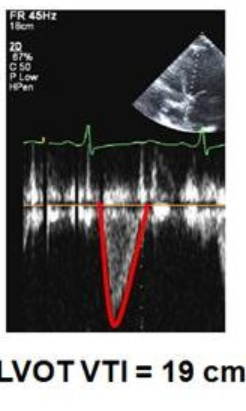
Espectro + trazado VTI
Con PW a escala de velocidad adecuada (evitar aliasing) y ganancia correcta, trace el
borde del espectro sistólico limpio (sin rellenar ruido ni cortar el pico). El equipo
integra la velocidad en el tiempo y muestra el VTI en cm; compruebe que el ciclo
seleccionado corresponde a una sístole completa y que el ECG de referencia coincide con el registro.
Valores orientativos de VTI en adultos con gasto conservado suelen citarse por encima de 17–18 cm; la
interpretación siempre es integrada con FC, área LVOT y clínica.
Paso 4
Integración: VTI + geometría → VS y GC
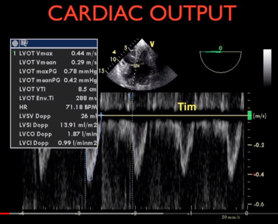
Panel de gasto (Doppler)
Una vez guardados el VTI y el diámetro o área del LVOT coherentes con el mismo segmento
anatómico, el analizador calcula el volumen sistólico y el gasto (o índice) según su algoritmo. Verifique
que la FC usada sea la del mismo bucle, revise unidades (L/min vs mL) y contraste con el
cálculo manual si procede.
Los nombres en pantalla (p. ej. LVCO, LVSV) dependen del fabricante; no sustituyen el criterio clínico.
1.2. Estimación alternativa del diámetro LVOT (mm) por superficie corporal
Fórmula empírica usada en algunas hojas de trabajo (verificar con curvas locales):
Diámetro estimado (mm) = 5,7 × ASC + 12,1
ASC: área de superficie corporal (m²). Sustituir solo si no hay medición directa fiable.
Si existe insuficiencia aórtica significativa o flujo dinámico en LVOT, la validez del método disminuye; valorar otros modos (p. ej. volumetría, otro outflow).
2. Valores orientativos, resistencias e índice cardíaco
2.1. Tabla de referencia (adulto)
Parámetro
Valor habitual
Unidad
Resistencias vasculares sistémicas (orden de magnitud)
1600–2400
dyn·s·cm−5
Volumen sistólico (VS)
> 60
mL
VTI aórtico (referencia práctica)
> 18
cm
Gasto cardíaco (GC)
3–5
L/min
Índice cardíaco (IC)
2,4–4,0
L/min/m²
2.2. Fórmulas centrales
Volumen sistólico y gasto:
GC = VS × FC
Unificar unidades (VS en mL, FC en lpm → dividir por 1000 para L/min).
Índice cardíaco:
IC = GC / ASC
Resistencia sistémica (variación tipo “IRVS” en hojas)
Algunas plantillas expresan un índice proporcional a la relación presiones/gasto (no sustituye el cálculo completo de RVS con unidades Wood):
IRVS ≈ (PAM − PVC) × 80 / IC
PAM: presión arterial media (mmHg); PVC: presión venosa central o presión de llenado derecha proxy (mmHg); IC en L/min/m². Contrastar con fórmulas del monitor y unidades del servicio.
3. Método unidimensional de Teichholz (modo M)
Modo MPEL (paraesternal eje largo, 2D) → modo M Measure
Estima volúmenes del VI a partir de diámetros internos en el eje largo parasternal; de ellos se derivan VS, FE aproximada y, con la FC, un GC coherente con esa geometría.
3.1. Parámetros medidos (siglas habituales)
IVSd / IVSs: grosor septal en diástole / sístole.
LVIDd / LVIDs: diámetro interno del VI en diástole / sístole.
LVPWd / LVPWs: grosor de pared posterior en diástole / sístole.
3.2. Volúmenes, volumen sistólico y gasto
EDV (VTD): volumen telediastólico del VI.
ESV (VTS): volumen telesistólico del VI.
Volumen sistólico (VS):VS = EDV − ESV
GC (cadena):GC = VS × FC (mismas unidades que en §1).
FE (Teichholz): porcentaje de eyección estimado por el algoritmo del equipo.
%FS: fracción de acortamiento del diámetro interno.
3.3. Interpretación orientativa de la FE (Teichholz)
FE (Teichholz)
Interpretación
> 55%
Función sistólica conservada
45–55%
Disfunción leve
30–44%
Disfunción moderada
< 30%
Disfunción severa
Limitaciones: pierde precisión con VI severamente dilatado, acinesias segmentarias o geometría muy asimétrica; en esos casos priorizar Simpson / 3D y métodos hemodinámicos.
4. Método de Simpson biplano
2DSimpson biplano (A4C + A2C)
Reconstrucción volumétrica del VI con contornos endocárdicos en dos proyecciones ortogonales:
A4C: apical 4 cámaras.
A2C: apical 2 cámaras.
4.1. Del volumen al gasto
Volumen sistólico (eyección):VS = EDV − ESV (equivalente a VTD − VTS si el equipo etiqueta así los volúmenes).
GC:GC = VS × FC
Evitar confundir el orden: el volumen eyectado es el inicial diastólico menos el residual sistólico.
5. EPSS (excursión septal frente al punto E mitral)
EPSS Distancia entre el desplazamiento anterior máximo de la válvula mitral (punto E) y el desplazamiento posterior máximo del tabique interventricular en modo M o equivalente bien alineado.
Refleja relación entre tamaño del VI y acortamiento sistólico longitudinal; sube con disfunción y con ciertas valvulopatías.
5.1. Valores de referencia habituales
EPSS
Interpretación práctica
< 7 mm
Compatible con función conservada (contexto clínico normal)
> 10 mm
Sugiere disfunción del VI (integrar con FE y geometría)
Puede aumentar con insuficiencia aórtica o estenosis mitral que alteren la dinámica mitral/septal.
6. Otros métodos y parámetros de contractilidad / volumen
6.1. Estimación subjetiva
Valoración visual experta de la thickening y el acortamiento endocárdico en múltiples segmentos; útil como comprobación rápida y debe quedar registrada (ej. “FE visual ~40%”).
6.2. Método área–longitud
Combina el área de la cavidad en un plano y la longitud larga del VI para estimar volumen cuando Simpson no es trazable; seguir presets del equipo.
6.3. dP/dt desde regurgitación mitral (CW)
dP/dt Estimación indirecta de la velocidad de ascenso isovolumétrico de presión en el VI usando la pendiente del espectro continuo de la IM entre dos velocidades de referencia (p. ej. 1 y 3 m/s → ΔP ≈ 12 mmHg en ~20 ms según enseñanza clásica).
Requiere regurgitación mitral moderada–severa y espectro denso (no saturado).
Más validado como apoyo a FEVI que como sustituto aislado; integrar con contractilidad regional.
6.4. Volúmenes de cavidades (2D / 3D)
Volumetría de aurículas y ventrículos para completar el fenotipo hemodinámico (precarga, remodelado, sincronía).
7. Índice de Tei (índice de rendimiento miocárdico)
Tei Integra tiempos isovolumétricos y el tiempo de eyección del VI; sensible a disfunción global cuando la FE aún es preservada.
7.1. Concepto
Intervalo entre el fin del flujo mitral y el comienzo del flujo mitral del ciclo siguiente, descompuesto en componentes isovolumétricos y eyección (según el protocolo de medición del laboratorio).
7.2. Mediciones típicas
Medición 1 — A4C: Doppler pulsado del flujo mitral con volumen de muestra en anillo mitral; obtener intervalos que permitan derivar CI y RI isovolumétricos.
Medición 2 — A5C: flujo del tracto de salida del VI para medir el tiempo de eyección (ET / PE).
7.3. Cálculo
Índice de Tei = (CI + RI) / ET
CI: contracción isovolumétrica; RI: relajación isovolumétrica; ET: eyección (misma convención temporal en ambos trazos). El equipo puede automatizar el cálculo.
Anexo — Figuras del manual original
Capturas incrustadas en Gasto cardiaco.docx (orden image1.png … image19.png).
Se muestran para reproducir el flujo visual del documento; los pies de figura genéricos pueden sustituirse por anotaciones propias del servicio.
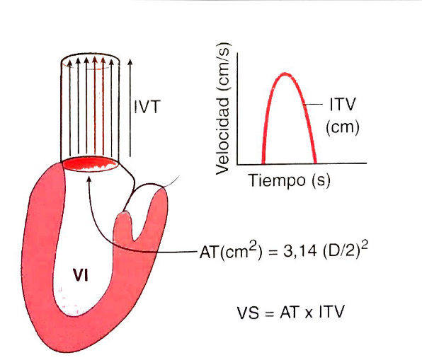
Fig. 1Fig. 2Fig. 3Fig. 4Fig. 5
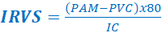
Fig. 6
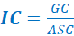
Fig. 7
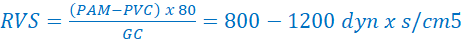
Fig. 8
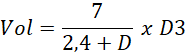
Fig. 9
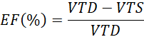
Fig. 10
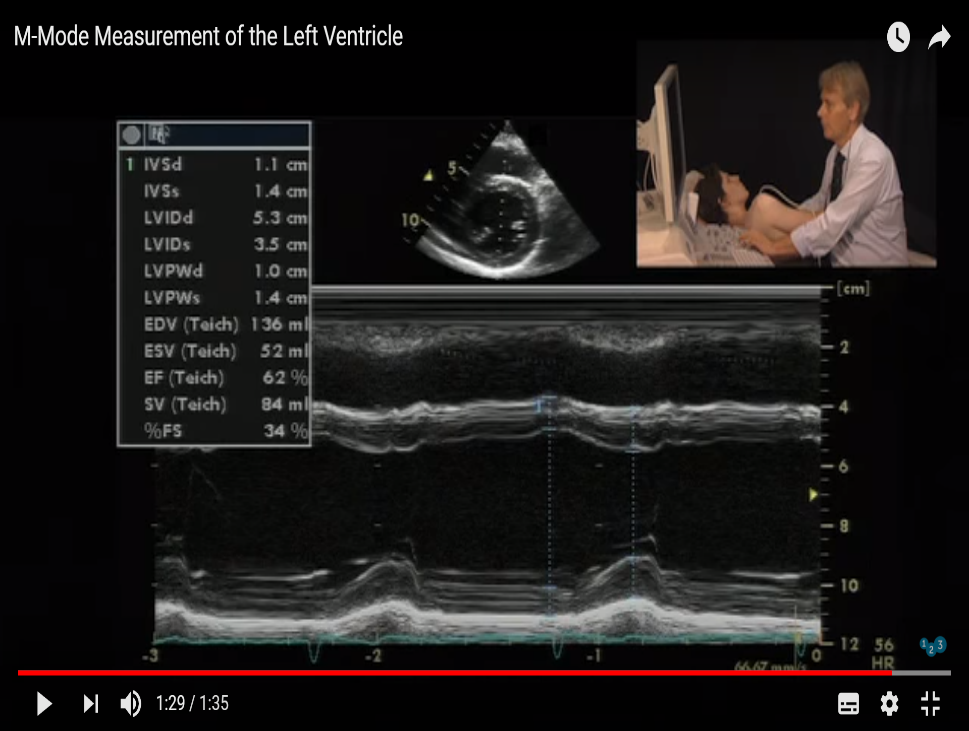
Fig. 11
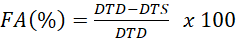
Fig. 12
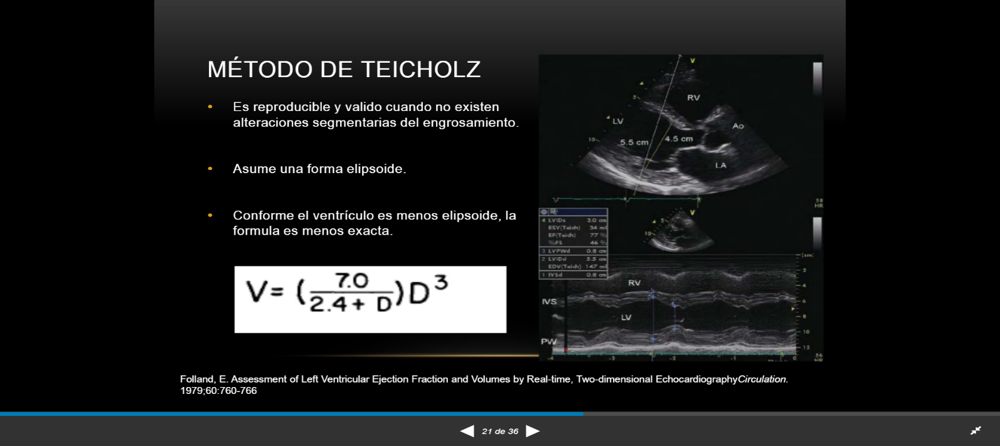
Fig. 13
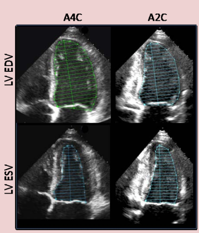
Fig. 14
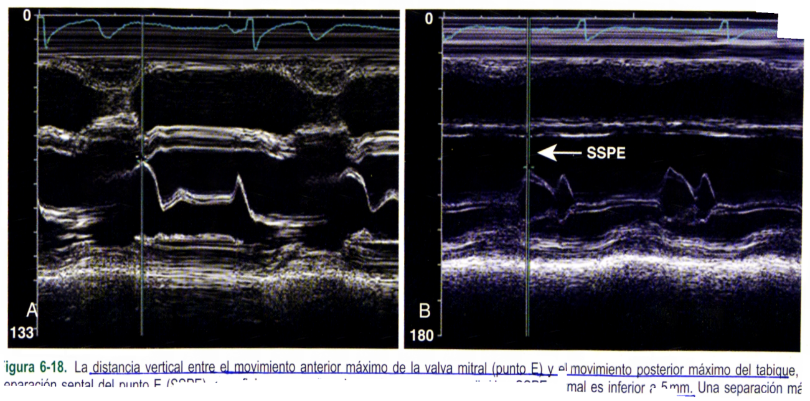
Fig. 15
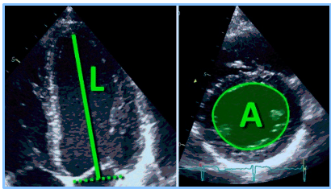
Fig. 16
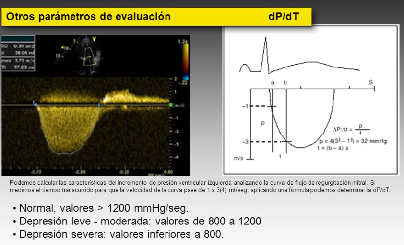
Fig. 17
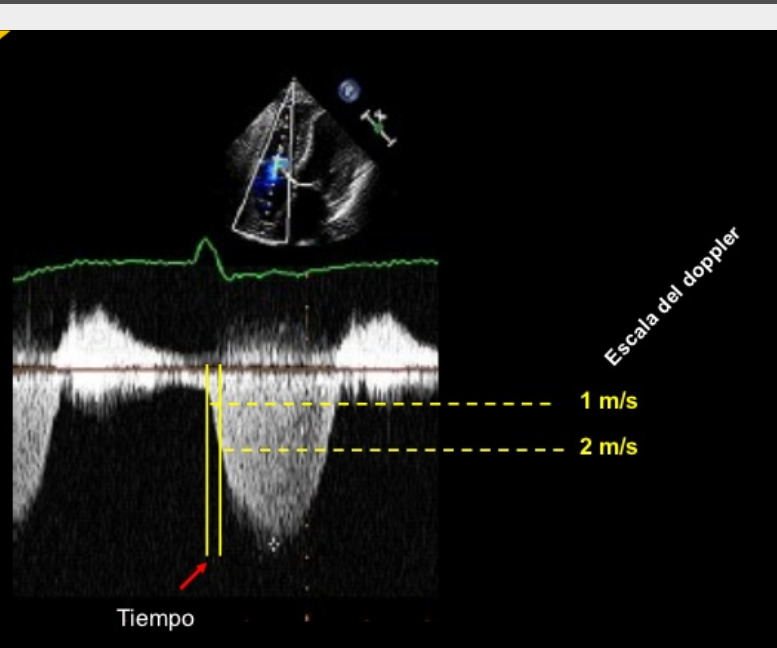
Fig. 18
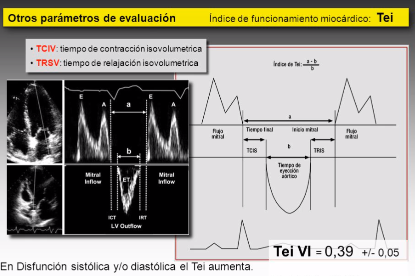
Fig. 19
Contenido educativo. Los algoritmos exactos (contornos Simpson, presets strain, unidades de resistencias) dependen del fabricante y de la guía del laboratorio.